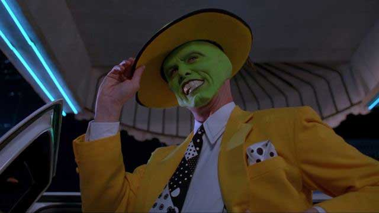
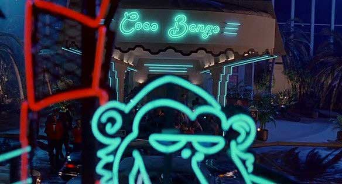

Stanley Ipkiss (Jim Carrey) is a shy, introverted banker who allows other people to walk all over him. Then one night, after a disastrous attempt to enjoy a night out at a swanky new club, Stanley finds the mask of Loki, which, when worn, turns Stanley into the wild, cartoon-like Mask.
As the Mask, he has the chance to get back at everyone who took advantage of him as Stanley, and even wins the interest of Tina (Cameron Diaz), the glamorous new singer at Edge City's hottest nightclub. However, the Mask's antics gain the attention of an Edge City police detective and Dorian (Peter Greene), Tina's boyfriend and a ruthless gangster.
Stanley finds himself kidnapped by Dorian's men, who take his mask and then deliver him to the police. When Dorian plans to use the mask in his bid to take over Edge City's crime scene and blow up the nightclub, Stanley has to find a way to escape the police and reclaim the mask, so that he can thwart Dorian's plans and save Tina from the gangster's clutches.